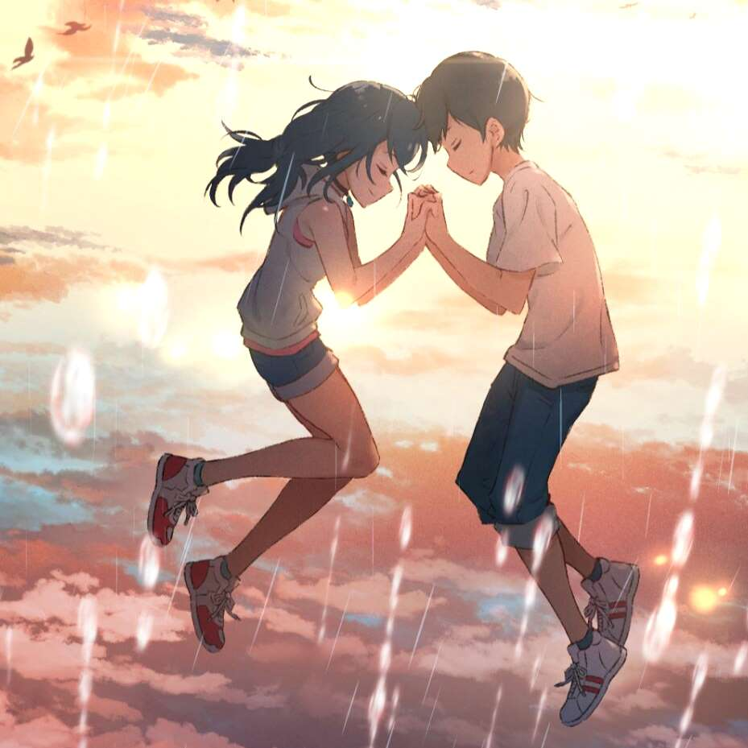
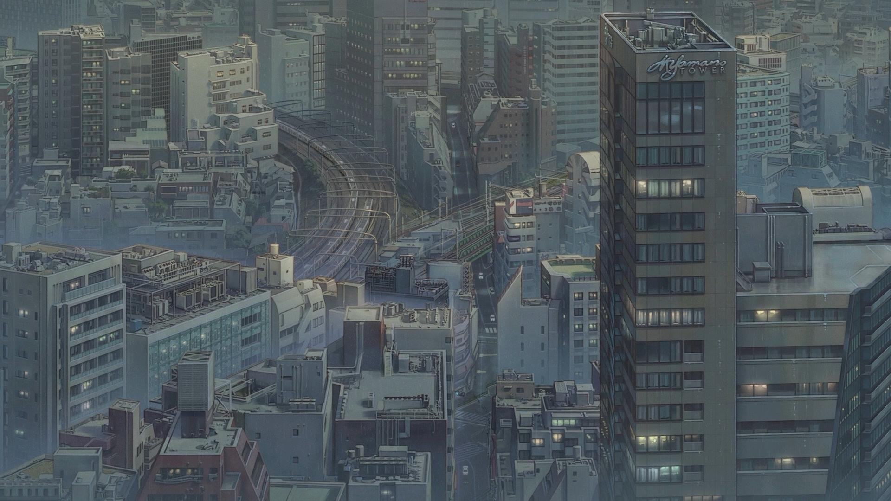
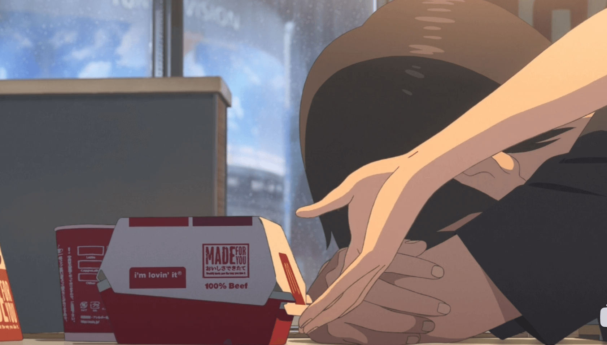
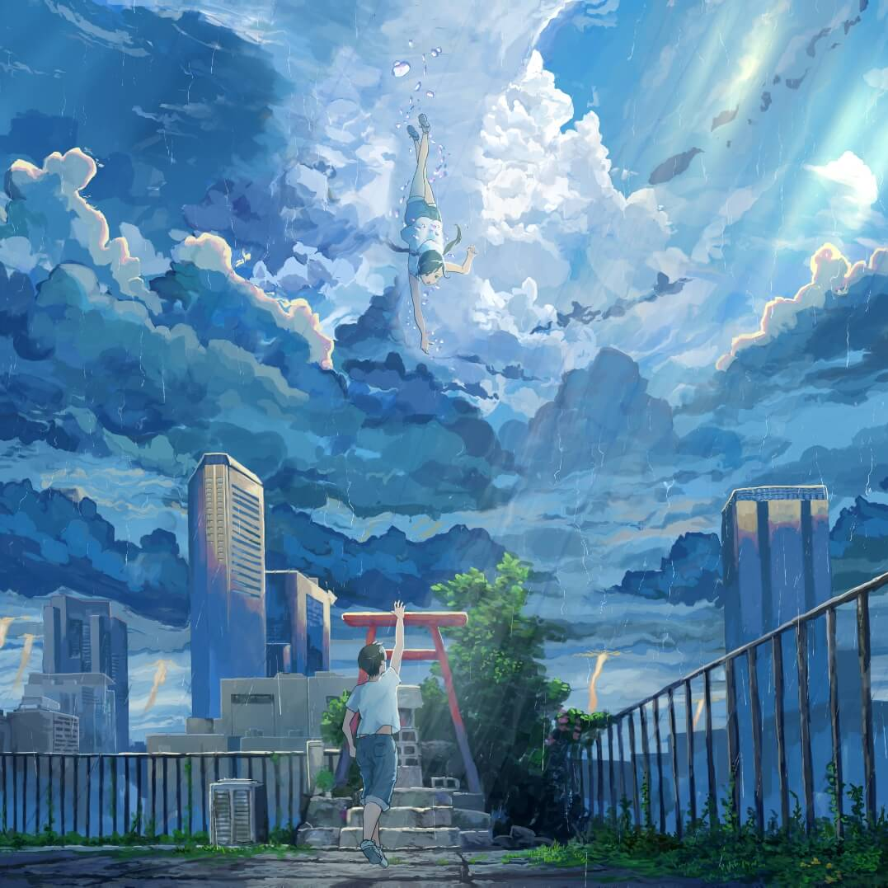

雨幕之下的相遇
电影的故事发生在一个东京连续下雨的夏天，这是由于全球变暖导致的气候异常。在这样的环境下，人们的生活受到了很大的影响——交通、工作、学习都被雨水打乱，连同人们的心情也变得沮丧和压抑。
就在这样的背景里，帆高与阳菜相遇了。帆高是一个从小岛逃离到东京的高中生，为了生存而打各种零工，没有家庭与朋友的支持，只能紧握成为作家的梦想。阳菜则是能改变天气的少女，与弟弟住在破旧的神社里，希望能让天空重归晴朗。两个孤独的灵魂因此互相吸引，开启了一段奇妙的旅程。
跟随帆高与阳菜的脚步，重温《天气之子》中几段难忘的瞬间。

电影的故事发生在一个东京连续下雨的夏天，这是由于全球变暖导致的气候异常。在这样的环境下，人们的生活受到了很大的影响——交通、工作、学习都被雨水打乱，连同人们的心情也变得沮丧和压抑。
就在这样的背景里，帆高与阳菜相遇了。帆高是一个从小岛逃离到东京的高中生，为了生存而打各种零工，没有家庭与朋友的支持，只能紧握成为作家的梦想。阳菜则是能改变天气的少女，与弟弟住在破旧的神社里，希望能让天空重归晴朗。两个孤独的灵魂因此互相吸引，开启了一段奇妙的旅程。

帆高年幼时便饱受家暴折磨，最终决定离家出走，只身来到东京。拥抱自由的同时，他也经历了无休止的迷茫——找工作处处碰壁，对未来失去信心。
阳菜的出现像一道光照进他的世界。她递出的汉堡包让两人的命运紧紧相连，也让帆高第一次感受到被理解与被温柔以待的力量。

在小杂志社工作的帆高偶然发现阳菜能够操控天气，他们便创建了线上服务，帮助不同的顾客暂时驱散乌云。这份事业不仅让他们的生活重拾希望，也成为两人守护彼此的约定。

在艰难的选择与巨大牺牲面前，帆高与阳菜仍旧坚持守护彼此。帆高历经阻碍终于找到失去力量的阳菜，却因此被警察带走，强制返回家乡。
多年后，雨后的东京渐渐适应了新的天空，而在曾被洪水淹没的地铁口，两人再度相遇。故事并未结束，他们的未来才刚刚开始。
1.Hallo（主题框架板块搭建与设计，内容填充与布局）
2.罗航（《晴女的小店》板块的 JavaScript 设计）
3.刘栋（《晴女的小店》板块的 HTML 页面设计）